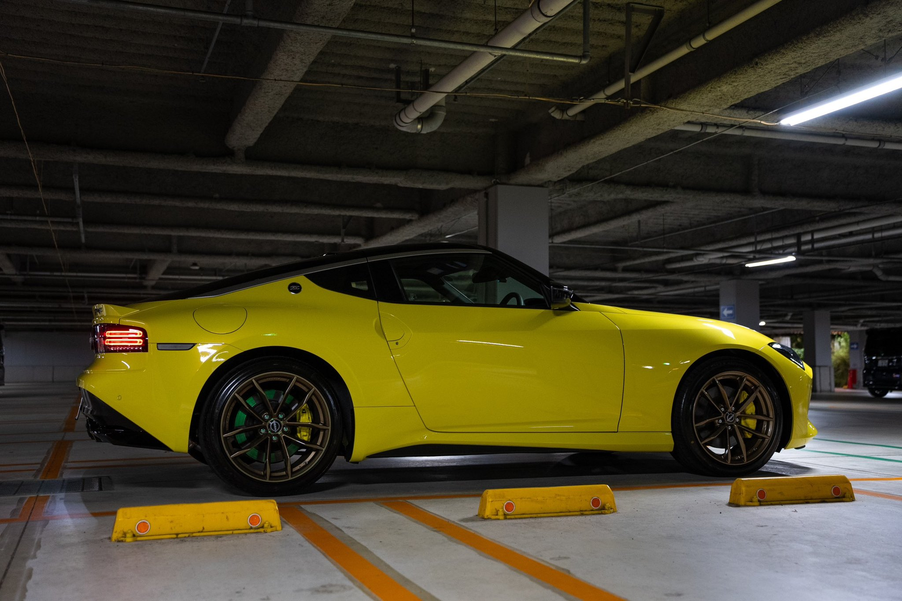
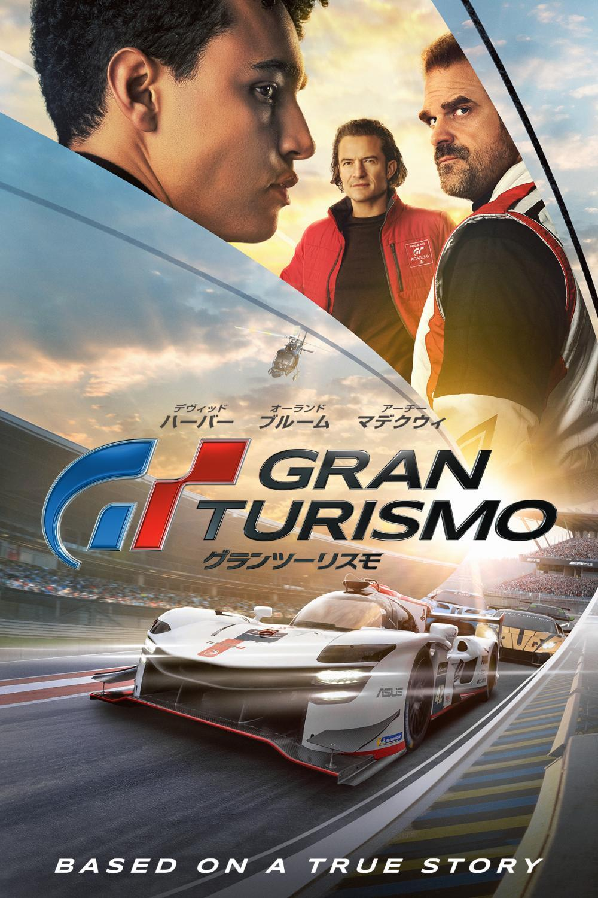

転職して2年経った
2022年1月に転職して 10X に入社した。SRE として入社してリライアビリティ & セキュリティ部に所属している。今年は色々なことがあった
- EM になって1年以上経った
- 部長になった
- SLO を真剣にやった
- チームマネジメントちゃんと思考し始めた (IC→Mgr)
- リライアビリティとセキュリティの両方で成果が出るような体制づくりを始めた
良い意味で忙しくできているので会社のブログも個人のブログも書けていない (書きたい)。来年は成果の取り組みとかをアウトプットしていきたい。
EM を1年やった
2022年の10月から Engineering Manager を引き受けることになったのでかれこれ1年以上経過した。夏頃には部長にもなった。“部長"というと大層なロールに感じるが、10X では Tech Lead を置いていないので部の技術的な意思決定とピープルマネジメントの両方をやる役職が部長となっている。
前職では人の評価をする人間になるとはこれっぽちも思っていなかったが、当時の Mgr が育休に入ることになってバトンタッチして引き受けることになった。もともと技術が好きでソフトウェアエンジニアになったつもりでいたんだけど、EM をお願いされたときは不思議と嫌な気分はしなかった。なんでかなと思ったら作っているプロダクトに興味があって事業が大きくなったりプロダクトがうまくいく (ために技術を使う) ことが好きなのであって、技術自体が HOW なわけではないからだと気づいた。なので結果として楽しく EM 業ができている。経験自体はないのでインプットしながら試行錯誤はしている。
Z 買った (車買い替えた)
RZ34型のフェアレディZ。発売してすぐの2022年7月末で受注停止になってしまい現在なお再開されていない。2023年12月時点でバックオーダーに6000台以上あって毎月60-100台程度しか生産できておらず(登録台数)このペースだとバックオーダーの納車まで4年以上かかる。
Zの発表時はかっこいいなあとは思ったけど、まさか現行でスポーツカーを買うとは思ってなかった。というのも小さいときから憧れのクルマだったR34スカイラインにずっと乗りたかったから。けれど25年近く経つため内外装の状態や価格面とかで諸々条件に見合うものに巡り会えずにいた。
そんなときZ NISMOの追加が発表されてますます興味出てきて、日産グローバル本社行って試乗したりしてた。そのときはまだいいなぁくらいだったけどNDロードスター(6MT)に数日乗る機会があって乗ったら久しぶりに乗ったMTがめちゃ楽しくて今すぐMT乗りたいと思った。R34買うまで待てなくてとりあえずMT乗りたい欲でソワソワしてたときに、そうだ、Zあるじゃんとおもって取り扱ってるお店に行って即契約した。
契約したZは20kmしか走ってないいわゆる登録済み未使用車で、納車時のビニールとかも被ったようなほぼ新車。最高の状態だった。バージョンSTのプロトスペック6速MT。240台しか生産されていない限定車。それも購入の決め手だった。前オーナーさんは地元の社長やっている人で乗らずに車庫保管してくれていた。あと次の買い手が20代ということを知って色々と融通して譲ってくれた。
納車して1ヶ月半くらい4500kmくらい走った。とりあえず楽しいクルマ。しばらくはノーマルで乗るつもり。

※ R34 は今もほしい。
PFCをコントロールしはじめた
PFCを意識した食事を始めた。ジムも行き始めた。長時間何か (外出,ドライブ,旅行,リュックを背負う, …) をするには体力が必要だと気づいた。あと今年ついに30代にも突入した。筋肉があればまず困ることはないだろうと9月ころから筋トレと食事コントロールを始めた。上半身(胸,肩,背中)と下半身(脚)の2回を週3-4で通ってる。筋肉の作り変わりの周期的にあと1−2ヶ月しないと実感する効果は出てこないが、まずは一生続けられるようにひたすら打ち込んでいる。
目安1600kcal
- Pタンパク質 120g 480kcal
- F脂質 35g 320kcal
- C炭水化物 200g 800kcal
使っているアプリはカロミル。課金もしてかなりいい感じに (ラクに) 食事管理ができている。
友人と Web アプリを作りはじめた
今年 NAS を買って今までいろんな SSD に分けて保存して動画をひとまとめにした。NAS は気兼ねなくファイルを置くのには便利だけどただのファイル置き場でしかなくメタデータを扱うことができない。動画 A と動画 B が関連した動画であることを管理することはできないし、チャプター分けとか、登場人物で検索とか、レーティングとかみたいなことをやるには、データベースチックなものを用意してメタデータぶっこむしかないなぁと思っていた。とりあえず JSON にメタデータ書き起こしたあとに (100以上も動画あって大変だった..) これを Web アプリから読めばいいじゃんと思ってコードを書き始めた。プライベートなアカウントを用意して YouTube なりの動画サイトにアップロードすることも一瞬よぎったけどネットにあげたくない動画もあるなと思って NAS においてアプリ開発することにした。
最初はひとりでつくりはじめた。Vue.js でフロント書いていて、NAS にある動画ファイルのメタデータやファイルパスなど書き記した JSON をフロントから読み込むことでバックエンドはなしという構成で作っていた。ビルドして生成された index.html を NAS の動画ファイルが置かれたディレクトリにポン置きしたらアプリとして立ち上がるという簡易的なもの。こんなの作ってるんだとゴールデンウィーク中に友人に見せたらそれから色々コミットしてくれるようになって結果次のような構成で作り直した。
- Go (SQLite を使うようにしたので backend を書いた)
- React (Vue から乗り換えた)
- SQLite (NAS で取り回しがしやすい SQLite を選択した)
めちゃくちゃいい感じになった。あとは管理画面作って API 叩かずに動画登録できるようにしたり、メタデータの編集をデータベースいじらずにできるようになったら一旦ゴールかな。
ちなみにこの開発でガッツリ使い込んだ便利ツール:
- TablePlus
- Sequel Pro (パンケーキ) みたいなデータベースクライアント
- レコード消したり書き換えたり Cmd+S でトランザクションコミットできたり SQL 叩いたり.. なんでもできる。めーーちゃくちゃ便利だった
- Postman
- HTTP リクエスト作れるやつ
- 知ってたけど前使ったときよりかなり進化していてめっちゃ便利だった
- リクエストの履歴を持ってくれてたりクエリパラメータの書き換えを文字列をいじらずに UI から編集できたりめっちゃ便利
買ってよかったもの
- NAS
- SynologyのDS220+
- 8TBのSynology Hybrid RAID (SHR) = RAID1で組んだ
- ミラーレス一眼で撮った写真とか動画を保存している
- Netflix や U-NEXT のような動画サイト (Go / React) を作って NAS サーバ上で動かして NAS の中の動画を PC やスマホで見れるようにした
- 間違いなく今年イチ体験良くなった買ったもの
- KOSS Porta Pro
- 開放型のヘッドホン
- SONY WH-1000XM5 とか AirPods Max も買ったんだけどこれが1番よかった
- リモートワークだし結局ヘッドホン使うときは室内 (家) なので開放型で問題なかった
- なにより付けててめちゃくちゃ軽いし音は重低音から響いてくるし、おにぎりサイズに折り畳めるから持ち運べるし最高だった
- HHKB Studio
- コンセプトとか新しい打鍵感とか総じてよかったんだけど、売っちゃった
- HHKB は通算4個ほど買ってる HHKB ファンということを加味しても微妙かなと思ってしまった
- サイドのトラックパッドもどきの挙動がかなりピーキーだった
- Apple Trackpad の体験には代えがたい (Notion DBとかスプレッドシートの横スライドのためにデスクの上に鎮座している..)
- 車
- 乗り換えだから元々持っていたわけではあるが、どこにでもいけるって当たり前だけどめっちゃ最高
- 電車とかに縛られない道があれば自由に移動できる最高
- 移動中もプライベート空間だから最高
- エンジン音も最高
- ガソリンの燃える匂いも最高
- Matador
観た映画
今年は新旧合わせて30~40本くらい観た。今年一番良かったのはグランツーリスモ。クルマ好きじゃなくてもめちゃくちゃ楽しめると思う。めっちゃ最高だった。

https://filmarks.com/users/b4b4r07
ID 変えた
GitHub の ID を b4b4r07 から babarot に変えた。もともと b4b4r07 は babarot の Leet code だったので戻したかんじ。b4b4 は打ちづらいし分かりづらいし。どんなサービスでも確実に ID を取れること以外にメリットなかったので変えた。babarot はもともと確保していたので↓の作業をした。
- babarot → babarot-tmp
- b4b4r07 → babarot
- babarot-tmp → b4b4r07
これで2つのアカウントの ID をスワップさせた。所有しているリポジトリとか全部リダイレクトしてくれるし特に困ったことはなかった。
来年
旅行した場所とか美味しかったご飯屋さんとか訪れた最高の店とかのまとめも入れて1年の振り返りしたい。
あと 10X での仕事がいま楽しい。来年ももっと頑張っていく。